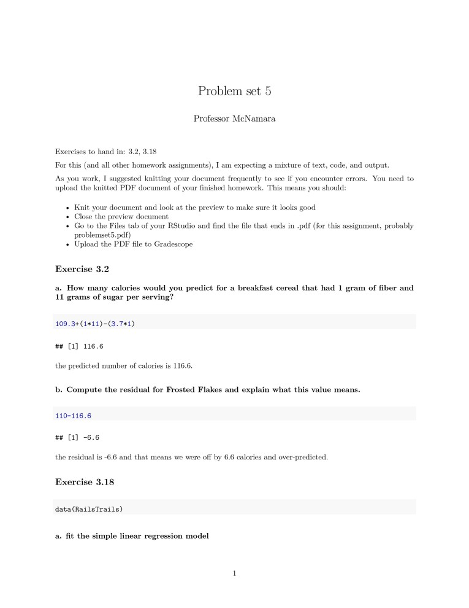
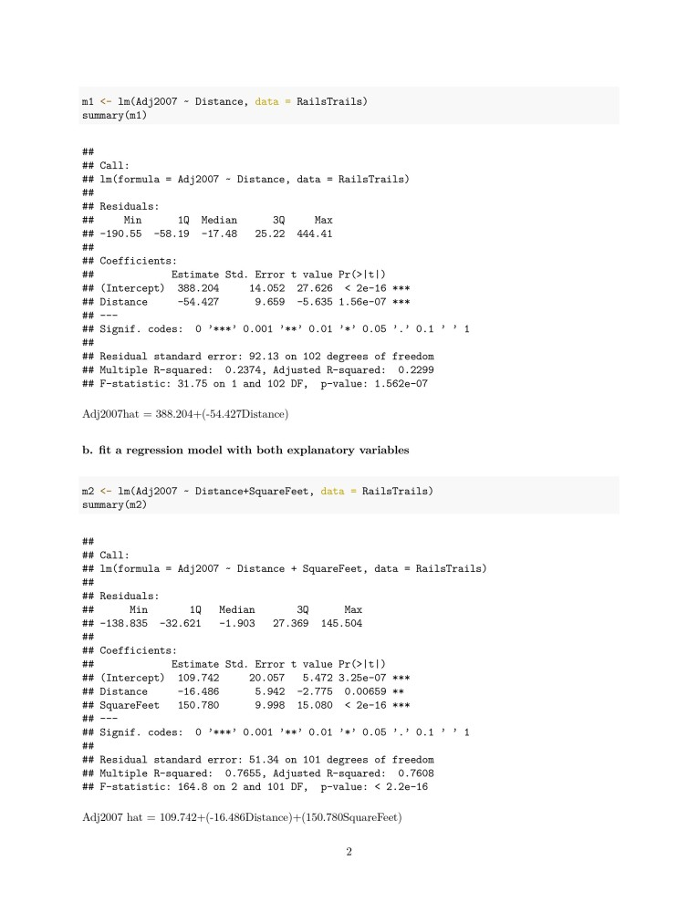
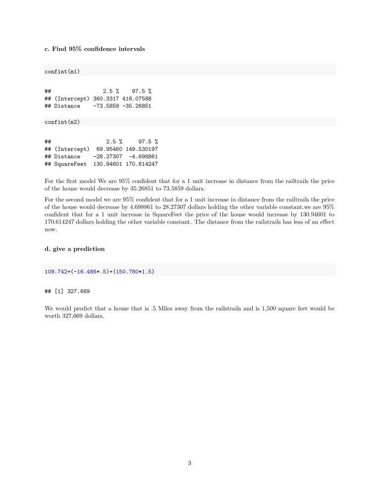

PROJECTS
HeroTable
One project I've worked on is a simple one called hero table. It is a website with a single page that has a table with each row having a superhero. The columns were superhero name, their real name, whether or not their identity is secret, weaknesses they may have, if they have killed people before, and a column with the link to that characters Wikipedia page. Most of it is text but the “have they killed” section is a button that will give you an alert giving you the answer to your question. I made the entire thing from the CSS to the JavaScript to the HTML. Even though the website doesn't look that impressive it at least shows that I have a basic understanding of how HTML CSS and JavaScript work together and that I am able to make something with that knowledge.

Statistical Data compilation
This is a statistical project that I had to work on. The reason that I bring up this project as opposed to other projects is because this was done in Rstudio. If you've ever heard of that software you will know that it is finicky and can be confusing but he is an incredible statistical tool. This project shows not only the fact that I was able to learn R but that I was able to apply it to a real scenario. In this case I was not looking at hundreds of pieces of data instead I had a limited amount of data that I would be using to answer these questions. The thing I'm hoping to showcase here is not only my capability to use the programming language but also my ability to explain and understand the information that my code was producing.



Sawin numbers
This project was an assignment in my computer architecture course. The assignment itself was to create a program that would calculate something called sawin numbers. This was the number pattern similar to the Fibonacci sequence only in the fact that it was a number pattern. The idea being that I would right up in such a way that one of the registries would populate with the answer. The point of showing this assignment is not for you to recognize my incredible math skills and my ability to code at all but the effect that since we were programming everything into registries we had a very limited number of resources and you had to be extremely detail oriented to complete this assignment. Instead of thinking of code in terms of loops and integers you have to think of each command you are throwing at the compiler as an expense that you need to cut down on. While somebody learning about it will normally not run into any problems with using all of their registries it is still a difficult thing to work around and learning to program not in functions but instead step by step is something that I'm happy to be able to call a skill since it's less about elevating your ability to code and more about elevating your ability to think while you code.